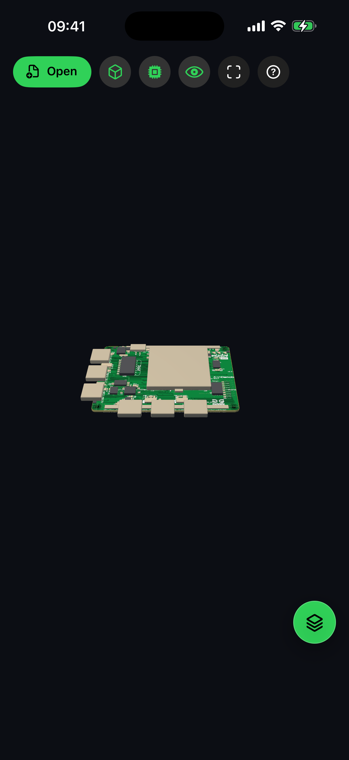

Couches de fabrication
Rôles cuivre et non-cuivre, éléments conducteurs, trous, rainures et profils de carte.
Un fichier d'échange PCB intelligent
Ouvrez les données de fabrication et d'assemblage d'un fichier IPC-2581 sous forme d'une carte structurée avec couches, composants et nets logiques recherchables.
.cvg.xmlAGBoard reconstruit les couches d'empilage, pads, pistes, arcs, surfaces, perçages, rainures routées, composants, boîtiers et nets logiques IPC-2581 pris en charge.
Le résultat utilise le même espace tactile que les autres projets AGBoard, avec visibilité par couche et navigation accélérée par le GPU.
Rôles cuivre et non-cuivre, éléments conducteurs, trous, rainures et profils de carte.
Références, boîtiers, face de placement et rotations lorsqu'ils figurent dans les données IPC-2581.
Recherchez un nom de net et surlignez les pads et éléments conducteurs pris en charge qui lui sont affectés.
Les mêmes outils tactiles restent disponibles sur téléphone ou dans l'espace plus large de l'iPad.


Cette visionneuse concerne les fichiers d'échange IPC-2581, généralement livrés en .cvg ou .xml.
Oui, lorsque le fichier source contient des données prises en charge de composants, boîtiers et nets logiques.
Non. Le fichier IPC-2581 est analysé et affiché localement sur l'appareil.
Téléchargez AGBoard sur iPhone ou iPad. Cinq ouvertures de fichiers sont incluses avant qu'un abonnement AGBoard Pro soit nécessaire.